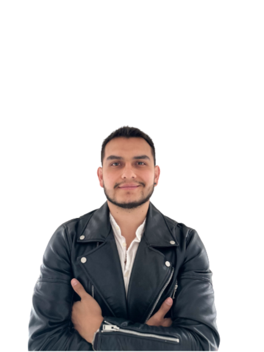

David Riascos

Summary
I’m a psychologist who decided to embrace uncertainty and became a Business Developer, Entrepreneur, and Project Manager, while also growing to love Web Development.
Education
- Bachelor's Degree in Psychology – Konrad Lorenz University (2010–2015)
- Specialization in Consumer Psychology – Konrad Lorenz University (2015–2016)
Work Experience
Quipu, Project Manager DeFi product
November 2023 - Present
- Build a DeFi infrastructure to unlock affordable credit for Micro SME borrowers who are unable to access formal credit in Latam.
- Planning and executing strategies to connect borrowers directly to DeFi lenders in an autonomous manner to reduce time-to-money and save operational costs.
- Develop strategic proposals for potential partners.
- Planning and executing growth strategy to find lenders globally.
- Build a DeFi infrastructure to unlock affordable credit for Micro SME borrowers who are unable to access formal credit in Latam.
- Planning and executing strategies to connect borrowers directly to DeFi lenders in an autonomous manner to reduce time-to-money and save operational costs.
- Develop strategic proposals for potential partners.
- Planning and executing growth strategy to find lenders globally.
Efy Finance, Business Development & Partnerships Advisor
Jan 2023 - November 2023
- Identify, establish, and maintain relationships with potential corporate partners across Latam (Web3 and Web2 Fintechs).
- Develop and present strategic plans and proposals to potential partners.
- Negotiate and execute contractual agreements.
- Monitor and measure the success of partnerships.
- Research and analyze industry trends, opportunities, and threats.
Celo Foundation/cLabs, Ecosystem Lead, Partnerships and Growth
May 2020 - Jul 2022
- Managed the full lifecycle of business development and growth initiatives, from prospecting and lead generation to contract negotiation and account management.
- Developed and implemented successful Growth and Business Development strategies that resulted in the acquisition of partnerships and use cases on Celo in over 10 countries across Latam, Europe, and Africa.
- Maintained long-term relationships with key alliance members, activating 80% of the use cases.
- Led webinars and in-person events to foster web3 community and awareness of Celo blockchain, attracting use cases and new business opportunities.
Blockchain Innovation Center, Partnerships, Business Development, and Community Lead Latam
Jun 2019 - Jun 2020
- Coordinated over 110 events to create a blockchain community across the region.
- Increased database from 1K to over 6K.
- Connected with key partners and companies to build over 13 use cases.
- Designed community experience.
- Hackathon Latam winner by Blockchain Summit Latam (Best social impact business model on crypto).
Aleia (Seligo), Co-founder
Dec 2017 - Jan 2019
- Researched, identified pain points, and created new leads.
Skills
- Growth/Partnerships/Crypto/Blockchain 🌟🌟🌟🌟🌟
- DeFi/NFT&🌟🌟🌟
- Community Building🌟🌟🌟🌟;
- Psychology🌟🌟🌟🌟🌟
- Partnership Development🌟🌟🌟🌟🌟
- Full Stack Development (in progress)🌟
Languages
- Spanish (Native)
- English (Business Proficient)
- Portuguese (In progress)
Contact Me
My info click here